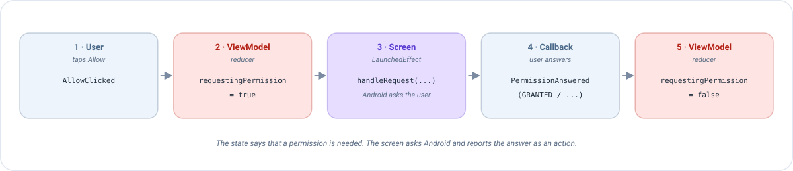

Permisos (Android)¶
Algunas cosas que quiere hacer una app están protegidas por Android: usar la cámara, leer la ubicación, enviar notificaciones... Antes de que la app pueda hacerlas, el usuario debe decir que sí en un diálogo del sistema. Esta página explica cómo pedir esos permisos con Emanate, paso a paso, con un ejemplo completo que puedes copiar.
La idea en un minuto¶
Pedir un permiso es incómodo para un ViewModel, porque el diálogo del sistema pertenece a la pantalla (la Activity), y el ViewModel no debe saber nada de Android. Emanate lo resuelve con la misma receta que todo lo demás:
- El ViewModel escribe en el estado que hace falta un permiso (
requestingPermission = true). - La pantalla lo ve, pide el permiso a Android y espera al usuario.
- Cuando el usuario responde, la pantalla envía la respuesta como una acción (
PermissionAnswered), y el ViewModel decide qué hacer a continuación.

La herramienta que habla con Android es EmaPermissionManager. Convierte el flujo del sistema (launchers, callbacks...)
en simples funciones suspend.
Antes de empezar¶
1. Declara el permiso en el manifest¶
Android ignora cualquier permiso que no esté declarado en AndroidManifest.xml, así que esto es lo primero que hay que
hacer:
<uses-permission android:name="android.permission.CAMERA" />
2. Conoce las tres respuestas¶
Cuando pides un permiso, el resultado es un PermissionState:
PermissionState |
Qué significa | Reacción típica |
|---|---|---|
GRANTED |
El usuario dijo que sí (o ya lo había dicho). | Hacer lo que necesitaba el permiso. |
NOT_GRANTED |
El permiso no está concedido. | Prescindir de él, o decir al usuario que hace falta. |
NOT_GRANTED_SHOULD_EXPLAIN |
No concedido, y el usuario ya lo rechazó una vez. Android recomienda explicar por qué lo necesita la app antes de volver a pedirlo. | Mostrar tu propio mensaje (un diálogo, por ejemplo) y dejar que el usuario lo intente de nuevo. |
Cuando el usuario rechaza dos veces
Tras un segundo rechazo Android deja de mostrar el diálogo del sistema: volver a pedirlo devuelve NOT_GRANTED al
instante. La única forma de conseguir el permiso entonces es que el usuario lo active en los ajustes de la app, así
que ofrece un botón que los abra.
El manager¶
La pantalla crea el manager con rememberEmaPermissionManager(). En un @PreviewLightDark devuelve un manager que lo concede
todo, para que tus previews no abran diálogos del sistema.
val permissionManager = rememberEmaPermissionManager()
Estas son sus funciones. Las que piden son suspend (esperan al usuario), así que llámalas desde una corrutina:
| Función | Qué hace |
|---|---|
isPermissionGranted(permission) |
¿Está concedido ahora mismo? Devuelve un PermissionState. No pide nada. |
areAllPermissionsGranted(a, b) |
true si todos están concedidos. No pide nada. |
shouldShowRequestPermissionRationale(permission) |
true si Android recomienda explicar antes de pedir. No pide nada. |
requestPermission(permission) |
Pide un permiso y devuelve su PermissionState. |
requestMultiplePermission(a, b) |
Pide varios a la vez y devuelve un Map<String, PermissionState>. |
if (permissionManager.isPermissionGranted(Manifest.permission.CAMERA) == PermissionState.GRANTED) {
openCamera()
}
Una petición cada vez
Android cancela una petición hecha mientras hay otra en pantalla: devuelve NOT_GRANTED (un mapa vacío para varios
permisos) en lugar de esperar. Nunca lances dos peticiones a la vez.
La forma rápida: pedir desde la pantalla¶
Si la respuesta solo le importa a la pantalla, puedes pedir desde una corrutina, sin ViewModel de por medio:
val scope = rememberCoroutineScope()
Button(onClick = {
scope.launch {
when (permissionManager.requestPermission(Manifest.permission.CAMERA)) {
PermissionState.GRANTED -> openCamera()
else -> showMessage("Hace falta la cámara para hacer la foto")
}
}
}) { Text("Hacer foto") }
Funciona, pero la decisión (¿qué pasa cuando el usuario dice que no?) vive ahora en la pantalla, donde no se puede testear sin un dispositivo. Cuando la respuesta cambia lo que muestra o hace la pantalla, usa la siguiente sección.
La forma de Emanate: pedir desde el ViewModel¶
Vamos a construir una pantalla que necesita la ubicación. El usuario pulsa Permitir, Android pregunta, y la pantalla muestra si se concedió el permiso. Si el usuario lo rechaza una vez, mostramos una explicación.
Paso 1: el estado y las acciones¶
El estado solo dice "se está pidiendo un permiso" y "el permiso está concedido". Son booleanos normales: el ViewModel nunca toca Android.
data class LocationState(
val requestingPermission: Boolean, // true mientras hay que pedir el permiso
val locationGranted: Boolean
) : EmaState {
companion object {
val DEFAULT = LocationState(requestingPermission = false, locationGranted = false)
}
}
sealed interface LocationAction : EmaAction {
data object AllowClicked : LocationAction // el usuario pulsó Permitir
data class PermissionAnswered(val permissionState: PermissionState) : LocationAction // Android respondió
}
sealed interface LocationEvent : EmaEvent {
data object PermissionRationaleNeeded : LocationEvent
}
Paso 2: el ViewModel¶
class LocationViewModel : EmaViewModel<LocationState, LocationAction, LocationEvent>(LocationState.DEFAULT) {
override fun setup() = source {
reducers {
add<LocationAction> { action ->
when (action) {
is LocationAction.AllowClicked -> state.copy(requestingPermission = true)
is LocationAction.PermissionAnswered -> state.copy(
// La petición ha terminado, así que no debe ejecutarse de nuevo
requestingPermission = false,
locationGranted = action.permissionState == PermissionState.GRANTED
)
}
}
}
sideEffects {
add<LocationAction.PermissionAnswered> { action ->
if (action.permissionState == PermissionState.NOT_GRANTED_SHOULD_EXPLAIN) {
publish(LocationEvent.PermissionRationaleNeeded)
}
}
}
}
}
Léelo como una conversación:
AllowClicked→ "necesito el permiso": el reducer activarequestingPermission.PermissionAnswered→ "aquí está la respuesta": el reducer desactivarequestingPermission(muy importante, mira la advertencia más abajo) y guarda si se concedió.- Si Android recomienda una explicación, el side effect publica un evento para que la pantalla pueda mostrarla.
Paso 3: la pantalla ejecuta la petición¶
La pantalla vigila requestingPermission. Cada vez que cambia, se ejecuta un LaunchedEffect que pide el permiso a
Android:
@Composable
override fun onState(state: LocationState, actions: EmaActionDispatcher<LocationAction>) {
val permissionManager = rememberEmaPermissionManager()
val scope = rememberCoroutineScope()
LaunchedEffect(state.requestingPermission) {
val request = if (state.requestingPermission) {
// Cuando el usuario responde, la respuesta se envía como una acción
EmaPermissionRequest.createRequest { actions.dispatch(LocationAction.PermissionAnswered(it)) }
} else {
// "Nada que hacer": el manager la ignora
EmaPermissionRequest.cancelRequest()
}
permissionManager.handleRequest(request, scope, Manifest.permission.ACCESS_COARSE_LOCATION)
}
Column {
Text(if (state.locationGranted) "Ubicación permitida" else "Ubicación no permitida")
Button(onClick = { actions.dispatch(LocationAction.AllowClicked) }) { Text("Permitir") }
}
}
Qué hace cada pieza:
| Pieza | Su tarea |
|---|---|
LaunchedEffect(state.requestingPermission) |
Ejecuta el bloque cada vez que cambia el flag: una vez cuando pasa a true, y otra cuando pasa a false. |
EmaPermissionRequest.createRequest { ... } |
Una petición con un callback. El callback recibe el PermissionState elegido por el usuario. |
EmaPermissionRequest.cancelRequest() |
La petición de "nada que hacer". handleRequest la ignora. Es lo que se ejecuta cuando el flag es false. |
permissionManager.handleRequest(request, scope, permission) |
Si la petición es real, pide el permiso a Android en scope y llama al callback con la respuesta. |
Sigamos lo que pasa cuando el usuario pulsa Permitir:
| # | Qué pasa | Quién |
|---|---|---|
| 1 | El usuario pulsa Permitir. La pantalla envía AllowClicked. |
Pantalla |
| 2 | El reducer devuelve requestingPermission = true. |
ViewModel |
| 3 | El flag cambió, así que el LaunchedEffect se ejecuta y llama a handleRequest. Android muestra su diálogo. |
Pantalla |
| 4 | El usuario elige. El callback envía PermissionAnswered(GRANTED) (u otro estado). |
Pantalla |
| 5 | El reducer devuelve requestingPermission = false y locationGranted = true. El LaunchedEffect se ejecuta de nuevo, pero ahora con cancelRequest(). |
ViewModel |
No olvides desactivar el flag
Si PermissionAnswered deja requestingPermission = true, el flag no vuelve a cambiar, el LaunchedEffect no se
ejecuta, y la siguiente pulsación de Permitir no hace nada. El reducer de la respuesta siempre lo pone de nuevo
a false.
Paso 4: explica cuando Android lo recomienda¶
El side effect del Paso 2 publicó PermissionRationaleNeeded. Gestiónalo como cualquier otro evento, por ejemplo abriendo
un diálogo que explique por qué la app necesita la ubicación, con un botón que vuelva a pedirla:
sealed interface LocationDialog {
data object WhyLocation : LocationDialog
}
// Reducer
is LocationAction.PermissionAnswered -> state.copy(
requestingPermission = false,
locationGranted = action.permissionState == PermissionState.GRANTED,
dialog = if (action.permissionState == PermissionState.NOT_GRANTED_SHOULD_EXPLAIN) {
LocationDialog.WhyLocation
} else {
null
}
)
Aquí dialog es un nuevo campo nullable de LocationState, como se explica en Diálogos. El botón
"Reintentar" de ese diálogo envía AllowClicked y el ciclo empieza de nuevo.
Testearlo sin dispositivo¶
La respuesta del usuario es solo una acción, así que un test puede simular cada resultado sin Android:
@Test
fun `a refused permission asks for an explanation`() = runTest {
val viewModel = LocationViewModel()
val recorder = viewModel.record()
viewModel.dispatch(LocationAction.AllowClicked)
recorder.assertState { it.requestingPermission }
viewModel.dispatch(LocationAction.PermissionAnswered(PermissionState.NOT_GRANTED_SHOULD_EXPLAIN))
advanceUntilIdle()
recorder.assertState { !it.requestingPermission && !it.locationGranted }
recorder.assertEvents(LocationEvent.PermissionRationaleNeeded)
}
Mira Testing para saber cómo configurar useTestConfiguration().
Varios permisos a la vez¶
Para pedir más de un permiso en un único diálogo del sistema, usa las versiones multiple. El callback recibe un Map
con la respuesta de cada permiso:
LaunchedEffect(state.requestingPermissions) {
val request = if (state.requestingPermissions) {
EmaMultiplePermissionRequest.createRequest { answers: Map<String, PermissionState> ->
actions.dispatch(CaptureAction.PermissionsAnswered(answers))
}
} else {
EmaMultiplePermissionRequest.cancelRequest()
}
permissionManager.handleRequestMultiple(
request, scope,
Manifest.permission.CAMERA, Manifest.permission.RECORD_AUDIO
)
}
// En el reducer
val allGranted = action.answers.values.all { it == PermissionState.GRANTED }
Ubicación¶
La ubicación tiene sus propios atajos, porque tiene algunas reglas especiales:
| Función | Uso |
|---|---|
requestCoarseLocationPermission() |
Ubicación aproximada. |
requestFineLocationPermission() |
Ubicación precisa. |
isLocationCoarseGranted(), isLocationFineGranted(), isLocationBackgroundGranted() |
Comprobar sin pedir. |
- Pide la ubicación precisa con
requestFineLocationPermission(), no conrequestPermission: según la versión de Android debe pedirse junto con la aproximada, y la función lo hace por ti. - La ubicación en segundo plano (
requestBackgroundLocationPermission(infoDialogType)deEmaAndroidPermissionManager) necesita antes la precisa. En las versiones recientes de Android el usuario la concede en los ajustes del sistema, yinfoDialogTypedecide la explicación que se muestra antes de abrirlos:InfoDialogType.Default(title, message), oInfoDialogType.CustomDialog(alertDialog, onAcceptClickListener)para mostrar tu propio diálogo.
Buenas prácticas¶
- Pide el permiso cuando haga falta, no al arrancar. Pide la cámara cuando el usuario toque Hacer foto, no cuando se abre la app. La gente acepta más cuando entiende por qué.
- Gestiona siempre el rechazo. La pantalla debe tener sentido incluso sin el permiso.
- Ten en cuenta los ajustes del sistema. Si el usuario sale de la app para activar un permiso allí, Android puede matar el proceso mientras tanto. Un backup conserva lo que había escrito.